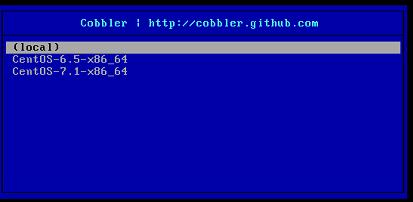
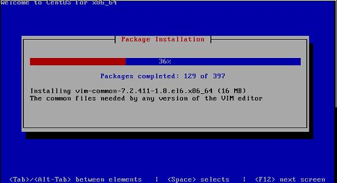

In this chapter we will use our Cobbler Server for deploying the first node. This node only have the basic configuration(CPU/Mem/Disk) at the very beginning, and it boots from PXE, using the PXE Server's kickstart file finally it will become a workable CentOS node.
Prepare the disk image file:
# qemu-img create -f qcow2 WolfHunterFirstNode.qcow2 100G
Create a new virtual machine, following steps:
Now bootup the virtual machine, you will see following menu(PXE Menu):

Choose CentOS-6.5-x86_64, now the installation will be continue.

All you want to do is drink a coffee, and wait to see the deployment finished.
Login to the deployed node to check its configuration:
# ifconfig
eth0 Link encap:Ethernet HWaddr 52:54:00:12:4F:B9
inet addr:10.15.33.5 Bcast:10.15.33.255 Mask:255.255.255.0
.....
You could also heck its route, disk infos, etc.
Notice: this deployed node located in the isolated network, so it could not reaches the internet.
In this section we use Cobbler Server for deploying a new node, and this node did actually be installed and configured and connected to Inner network, in later chapters we will talk about more advanced topics on Cobbler based deployment.
Now we have finished the Cobbler Server setup, by walking through this chapter you have got a workable Cobbler Server and 2 distros which is availble for deployment.
In next chapter we will introduce Ansible, use ansible for automatically install/configure/remove packages in our newly deployed node.